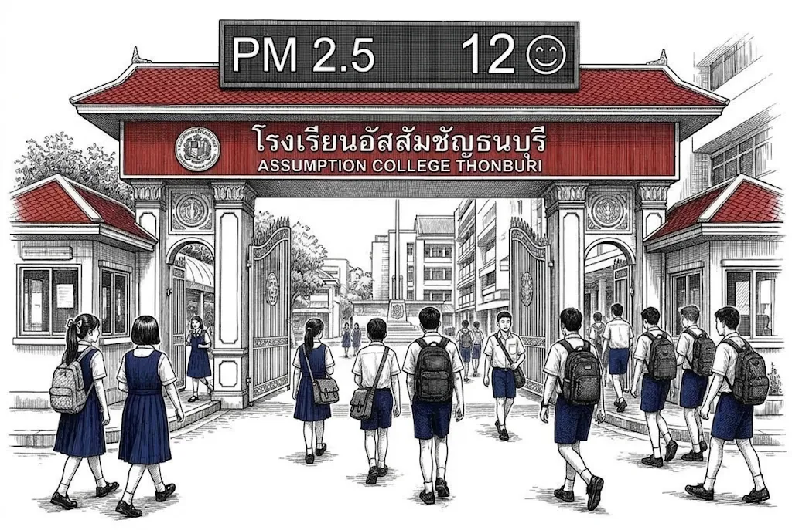
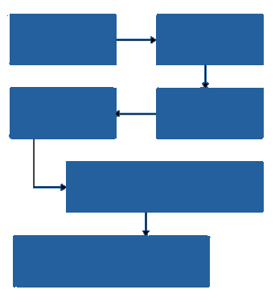

Labor Omnia Vincit. What does it mean?
Hard work conquers everything.

A fantasy story about Thai students using Government to change the law.
How much knowledge of the world do you have?
Assumption College Thonburi
Labor Omnia Vincit. What does it mean?
Hard work conquers everything.
I agree that hard work is important. But I think this one matters more.
Scientia Omnia Vincit
Knowledge overcomes all.
The question So, Pheem. Well done on your amazing university results. We're so happy to interview you for this regional policy position at the United Nations. To get started, can you tell us about Thailand's current refugee policy on the Thai-Burma border?
Interview one
Pheem: The refugee policy? Thailand? Um, um, I know this is a problem.
Interview two
Pheem: Thailand has not signed the 1951 Refugee Convention, so there is no refugee law here. The government calls the border camps temporary shelters. More than 90,000 people live in nine of them, mostly Karen and Karenni from Myanmar. They need permission to leave the camps, and some have lived there since the 1980s. UNHCR can visit, but Thailand decides who may stay.
It is important that you have a good knowledge of the things that are happening in the world. Why? Think of two reasons.
Every Monday, from now on, you will start the class with a short quiz: five questions about current events.
Three will be the top world stories. Two will be the top stories in Thailand.
The winner and the most improved at the end of the term will each get a cool prize, like a family pizza or a huge Swensen's sundae.
You will be competing against all five classes I teach: M2-4A, M2-5A, M3-3A, M3-4A and M3-5A.
Are you ready? Our first quiz will begin in a moment.
You will have 25 seconds to answer each question. I will mark every answer and publish a leaderboard.
Question 1 of 5
25
Question 2 of 5
25
Question 3 of 5
25
Question 4 of 5
25
Question 5 of 5
25
Read a story about five students and a law.
Follow a bill from the first signature to the Royal Gazette.
Answer seven questions, then check them against the key.
Write the bill you would like to see in Thailand.

Silently
Read the article on your sheet. The line numbers are in the margin.
With your partner
Check your answers against the suggested key. Mark anything you got wrong, and say why.
The students in this article changed a law that affected them. Now choose a law you would like to see introduced in Thailand.
In your notebook
Write 100–120 words.
In your notebook
Write. If you finish, read it back and check the three jobs your law creates.